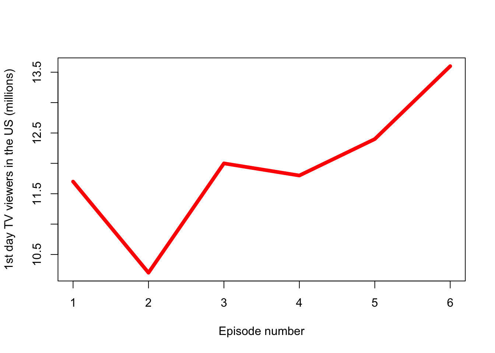

Assignment
Game of Thrones - Season 2 summary in numbers
(Warning: spoilers ahead)
Overview
(From the Wikipedia) Game of Thrones is an American fantasy drama television series created by David Benioff and D. B. Weiss for HBO. It is an adaptation of A Song of Ice and Fire, a series of fantasy novels by George R. R. Martin, the first of which is A Game of Thrones.
Set on the fictional continents of Westeros and Essos, Game of Thrones has a large ensemble cast and follows several story arcs throughout the course of the show. A major arc concerns the Iron Throne of the Seven Kingdoms of Westeros through a web of political conflicts among the noble families either vying to claim the throne or fighting for independence from it. Another focuses on the last descendant of the realm’s deposed ruling dynasty, who has been exiled to Essos and is plotting a return to the throne. A third story arc follows the Night’s Watch, a military order defending the realm against threats from the North.
Season 2 summary
In King’s Landing, Tyrion becomes acting Hand of the King, much to Cersei’s dismay. At Dragonstone, Stannis proclaims allegiance to the priestess Melisandre’s God of Light and claims the Iron Throne, having revealed Joffrey’s bastardy. Joffrey orders King Robert’s bastard sons slaughtered. One, Gendry, along with the disguised Arya, have escaped the city and are being taken to Castle Black. Having won three victories, Robb Stark, who is now proclaimed as the King of the North, offers the Lannisters peace in exchange for the North’s independence and Sansa’s and Arya’s safe return. He sends Theon to gain Balon Greyjoy’s support, and Catelyn to seek an alliance with Renly Baratheon, who also claims the crown. Beyond the Wall, the Night’s Watch shelters with Craster and his daughters/wives. In Essos, as her people slowly die in the Red Waste, Daenerys dispatches three riders to conduct reconnaissance. Returning to Pyke Island after nine years as the Starks’ ward, Theon is reunited with his sister, Yara, and his father, Balon, who despises Theon’s acquired Northern ways. Balon plots to win back his crown by force. Cersei rejects Robb’s terms, and Tyrion exiles Slynt, head of the Gold Cloaks, to the Knight’s Watch, and promotes Bronn to Commander of the Watch. En route to Castle Black, Arya, impersonating a boy, admits her true identity to Gendry. At Craster’s Keep, north of the Wall, Samwell Tarly is approached by Gilly, one of Craster’s daughters. Gilly fears for her unborn child if it is a boy; Jon Snow resists helping, despite Sam’s pleas. In the Red Waste, a horse returns to Daenerys’ camp with its rider’s severed head in a pouch, a message from her enemies. In Dragonstone, former smuggler Ser Davos Seaworth, who now serves Stannis, recruits the pirate Salladhor Saan and his fleet to Stannis’ side. Stannis attempts to sire a male heir with Melisandre, as his wife, Selyse has failed to produce a son. Jon discovers that Craster sacrifices his sons to the White Walkers; Craster catches him spying and knocks Jon unconscious. Catelyn arrives at Renly’s camp to negotiate an alliance. The female warrior, Brienne of Tarth, wins the right to join Renly’s king’s guard through combat. Renly has recently wed Margaery Tyrell, Loras’s sister. Renly avoids consummating his and Margaery’s marriage due to his homosexuality and sexual relationship with Loras. In the Iron Islands, Balon plans an attack on the North, led by Yara. After burning his letter to Robb warning of Balon’s impending attack, Theon affirms his allegiance to House Greyjoy in a water-based ceremony. In King’s Landing, Tyrion imprisons Pycelle after determining he is Cersei’s informant. Tyrion appoints his lover, Shae, as Sansa’s handmaiden, both to protect Shae and watch Sansa. Beyond the Wall, Craster demands the Night’s Watchmen leave. Jon discovers that Jeor Mormont has always known about and ignored Craster’s incestuous crimes in exchange for his men’s respite at his keep. On the road to the wall, the Night’s Watch recruits are attacked by Lannister soldiers searching for Gendry. Yoren is killed, and Arya and Gendry are taken prisoner. To protect Gendry, Arya falsely states that a boy the guards have killed was Gendry. Catelyn attempts to unite the Baratheon brothers against the Lannisters, but Stannis demands Renly’s loyalty to him as king. Littlefinger visits Catelyn and offers to trade Jaime for her daughters. Davos witnesses Melisandre giving birth to a shadow creature. Joffrey publicly abuses Sansa as revenge for Robb’s victories until Tyrion intervenes. The dwarf sends two prostitutes to the young King to calm his tempers, but Joffrey makes one of them beat the other brutally, thus threatening Tyrion not to interfere with his business. Tyrion releases Pycelle and dismisses him from the Small Council. When Tyrion discovers Cersei’s incestuous relationship with their cousin, Lancel, he blackmails Lancel into spying on Cersei, threatening to reveal the relationship to Joffrey. Arya and Gendry are taken to Harrenhal castle as captives. Prisoners are systematically tortured to death until Tywin arrives and demands they be used as labor. Recognizing Arya is a girl, he makes her his servant without knowing her true identity. After an exhausting journey through the desert, Daenerys arrives at the prosperous city of Qarth. Daxos, a member of the Council of Thirteen, persuades fellow councilmen to allow Daenerys and her retinue to enter the city. At Harrenhal, Jaqen H’ghar, one of three caged prisoners Arya previously saved, pledges to kill any three people she chooses to repay his debt to her. Her first choice is the Tickler, the man who mortally tortures the captives. Renly is killed by Melisandre’s shadowy assassin. Lady Brienne is accused of the murder and Catelyn forces her to flee the camp. Excluding the Tyrells, Renly’s forces join Stannis. Brienne swears life-long fealty to Catelyn and will protect her daughters. Theon sails from Pyke, and against Yara’s orders, intends to prove he is a true Ironborn by capturing Winterfell during Robb’s absence. Lancel tells Tyrion about wildfire, a mass-produced explosive substance hidden in the city’s dungeons and intended to destroy Stannis’ fleet and army during the impending siege. Tyrion then takes control of the scheme. In the north, the Night’s Watch arrives at an ancient fortress called the Fist of the First Men. Jeor Mormont allows Jon to join the team led by a veteran named Halfhand, to kill the enemy leader. In Qarth, Daxos proposes marriage to Daenerys in exchange for providing her his wealth to conquer the Seven Kingdoms. Ser Jorah convinces her to instead gain the Westerosi peoples’ support. Against Cersei’s wishes, Tyrion sends her and Jaime’s daughter, Myrcella, to Dorne for protection. Theon captures Winterfell and executes Ser Rodrik Cassel. Osha, the captive Wildling, along with Hodor, helps Bran and Rickon escape. Robb reunites with the healer, Talisa Maegyr. At the Fist of the First Men, Jon captures a Wildling named Ygritte, but is separated from his patrol while pursuing her after she escapes. Joffrey incites a riot at King’s Landing, in which he is nearly killed and Sansa almost raped. Tywin allows Littlefinger to seek the Tyrells’ allegiance. At Harrenhal, Arya has H’ghar kill an officer who is suspicious of her. Robb receives news about Theon’s treachery and sends men to retake Winterfell. At Qarth, Daenerys works to procure a ship to transport an army to Westeros while keeping Daxos at bay. One of Daenerys’ maids is killed and her dragons stolen. Theon and his men pursue Brandon and Rickon. Tywin has Harrenhal searched for his officer’s killer. Jon recaptures Ygritte, but she escapes again, leading him into a trap. Still shaken from the riot, Sansa is horrified that she has begun menstruating and is now old enough to marry and bear Joffrey’s children. Cersei warns her to love no one but her children, not even Joffrey. In Robb’s camp, Jaime’s failed escape leaves a guard dead and some soldiers seeking retribution. In Qarth, the warlock Pree says he stole Daenerys’ dragons; he offers her the opportunity to reunite with them, then slaughters the Council of Thirteen and establishes Daxos as king. In Winterfell, Theon presents the charred corpses of two farm boys to Maester Luwin, falsely claiming they are Brandon and Rickon. Robb learns that Catelyn secretly freed Jaime Lannister, who Brienne is escorting to ransom him in exchange for Sansa and Arya; Robb places his mother under house arrest and sends men to capture Jaime. Robb is attracted to a spirited medic, Talisa Maegyr, a woman from Volantis. Yara arrives at Winterfell and criticizes Theon’s seizing it, saying it has no strategic value to the Ironborn. He refused to return to Pyke with her. When Tywin leaves Harrenhal to attack Robb, Arya coerces H’ghar into helping her, Gendry, and their friend, Hot Pie to escape. In King’s Landing, Cersei attempts to blackmail Tyrion by abducting Ros, whom the former believes is his secret lover. Joffrey chastises Varys for not having more knowledge of Stark positions, and prepares to lead the attack against Stannis himself. En route to King’s Landing, Stannis promises to make Davos his Hand of the King. Beyond the Wall, the Wildling leader, “Rattleshirt”, leads the captured Jon and Halfhand to his king, Mance Rayder. At the Fist of the First Men, the brothers of the Night’s Watch find a hidden cache of dragonglass weapons, left there by a previous Night’s Watch brother. In Qarth, Jorah accompanies Daenerys to the House of the Undying to retrieve her dragons. Brandon and Rickon are revealed to be alive and hiding in Winterfell. Stannis’ fleet assaults King’s Landing. Sansa plays the game, trying to manipulate Joffrey into leading the attack personally, (in hopes of getting him killed), but Joffrey turns out to be too afraid to fight personally. Leading the defense, Tyrion destroys many attacking ships with wildfire, forcing Stannis to attack on land. Sandor Clegane leads the defense outside the gate, but is defeated and retreats inside, denouncing Joffrey and leaving. Joffrey retreats in fear as Tyrion rallies the Gold Cloaks into fighting with him. Stannis’ forces enter the castle, but Tyrion leads his men behind Stannis’ forces via tunnels and mounts a rearguard attack. Cersei goes to the throne room with Tommen, intending to kill him to save him from being captured. Shae convinces Sansa to hide in her chamber. Sandor Clegane offers to take Sansa to Winterfell, but she refuses to leave. As Tyrion lies wounded and Cersei is about to poison Tommen, Tywin’s forces, joined by Loras, arrive and force Stannis to retreat. Joffrey sets Sansa aside to marry Margaery Tyrell and ally with the Tyrell family. Tyrion fears for his and Shae’s safety after Tywin is named Hand of the King. Melisandre gives Stannis a new hope. Brienne kills Stark soldiers after they recognize Jaime. Catelyn fails to dissuade Robb from marrying Talisa, breaking his promise to wed Walder Frey’s daughter. In Qarth, inside the House of the Undying, Daenerys enters a simulacrum of a destroyed Iron Throne room, then is reunited with what appears to be Khal Drogo and their infant son. Knowing it is unreal, she leaves and successfully retrieves her dragons, who fatally burn Pree, who tries to imprison her. She seals Daxos and her traitorous servant inside his empty vault and claims his other possessions, with which Jorah will pay for a small ship. In Winterfell, Theon wants his men to fight Robb’s army, but they knock him unconscious and leave; Winterfell is torched. Fatally wounded Maester Luwin convinces Osha to escape with Brandon and Rickon to the Wall for Jon’s protection. After Arya, Hot Pie, and Gendry escape Harrenhal, H’ghar gives Arya a non-monetary coin he says can be used to find him in Braavos. Before her, he magically changes his face. North of the Wall, Halfhand forces Jon to kill him to prove his loyalty to the Wildlings. An army of White Walkers and dead men surrounds the Fist of the First Men; Sam hides, watching in horror as they pass.
You can see how the viewership of the episodes changed in Figure 1.